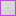

<!doctype html>
<html lang="en">
    <head>
        <meta charset="utf-8">
        <meta http-equiv="X-UA-Compatible" content="IE=edge">
        <meta name="viewport" content="initial-scale=1,user-scalable=no,maximum-scale=1,width=device-width">
        <meta name="mobile-web-app-capable" content="yes">
        <meta name="apple-mobile-web-app-capable" content="yes">
        <link rel="stylesheet" href="css/leaflet.css"><link rel="stylesheet" href="css/L.Control.Locate.min.css">
        <link rel="stylesheet" href="css/qgis2web.css"><link rel="stylesheet" href="css/fontawesome-all.min.css">
        <link rel="stylesheet" href="css/MarkerCluster.css">
        <link rel="stylesheet" href="css/MarkerCluster.Default.css">
        <link rel="stylesheet" href="css/leaflet-control-geocoder.Geocoder.css">
        <link rel="stylesheet" href="css/leaflet-measure.css">
        <style>
        html, body, #map {
            width: 100%;
            height: 100%;
            padding: 0;
            margin: 0;
        }
        </style>
        <title></title>
    </head>
    <body>
        <div id="map">
        </div>
        <script src="js/qgis2web_expressions.js"></script>
        <script src="js/leaflet.js"></script><script src="js/L.Control.Locate.min.js"></script>
        <script src="js/leaflet.rotatedMarker.js"></script>
        <script src="js/leaflet.pattern.js"></script>
        <script src="js/leaflet-hash.js"></script>
        <script src="js/Autolinker.min.js"></script>
        <script src="js/rbush.min.js"></script>
        <script src="js/labelgun.min.js"></script>
        <script src="js/labels.js"></script>
        <script src="js/leaflet-control-geocoder.Geocoder.js"></script>
        <script src="js/leaflet-measure.js"></script>
        <script src="js/leaflet.markercluster.js"></script>
        <script src="data/kaz_admbnda_adm1_2019_2.js"></script>
        <script src="data/1_3.js"></script>
        <script src="data/_4.js"></script>
        <script src="data/_5.js"></script>
        <script>
        var map = L.map('map', {
            zoomControl:true, maxZoom:21, minZoom:2
        }).fitBounds([[41.59508852760059,70.0629746726557],[46.66565739533676,83.22811072504435]]);
        var hash = new L.Hash(map);
        map.attributionControl.setPrefix('<a href="https://github.com/tomchadwin/qgis2web" target="_blank"></a> &middot; <a href="https://leafletjs.com" title="A JS library for interactive maps">Leaflet</a> &middot; <a href="https://qgis.org"></a>');
        var autolinker = new Autolinker({truncate: {length: 30, location: 'smart'}});
        L.control.locate({locateOptions: {maxZoom: 19}}).addTo(map);
        var measureControl = new L.Control.Measure({
            position: 'topleft',
            primaryLengthUnit: 'meters',
            secondaryLengthUnit: 'kilometers',
            primaryAreaUnit: 'sqmeters',
            secondaryAreaUnit: 'hectares'
        });
        measureControl.addTo(map);
        document.getElementsByClassName('leaflet-control-measure-toggle')[0]
        .innerHTML = '';
        document.getElementsByClassName('leaflet-control-measure-toggle')[0]
        .className += ' fas fa-ruler';
        var bounds_group = new L.featureGroup([]);
        function setBounds() {
        }
        map.createPane('pane_GoogleSatellite_0');
        map.getPane('pane_GoogleSatellite_0').style.zIndex = 400;
        var layer_GoogleSatellite_0 = L.tileLayer('http://mt1.google.com/vt/lyrs=s&x={x}&y={y}&z={z}', {
            pane: 'pane_GoogleSatellite_0',
            opacity: 1.0,
            attribution: '',
            minZoom: 2,
            maxZoom: 21,
            minNativeZoom: 0,
            maxNativeZoom: 22
        });
        layer_GoogleSatellite_0;
        map.addLayer(layer_GoogleSatellite_0);
        map.createPane('pane_GoogleMaps_1');
        map.getPane('pane_GoogleMaps_1').style.zIndex = 401;
        var layer_GoogleMaps_1 = L.tileLayer('http://mt1.google.com/vt/lyrs=m&x={x}&y={y}&z={z}', {
            pane: 'pane_GoogleMaps_1',
            opacity: 1.0,
            attribution: '',
            minZoom: 2,
            maxZoom: 21,
            minNativeZoom: 0,
            maxNativeZoom: 22
        });
        layer_GoogleMaps_1;
        map.addLayer(layer_GoogleMaps_1);
        function pop_kaz_admbnda_adm1_2019_2(feature, layer) {
            var popupContent = '<table>\
                    <tr>\
                        <td colspan="2">' + (feature.properties['ADM0_EN'] !== null ? autolinker.link(feature.properties['ADM0_EN'].toLocaleString()) : '') + '</td>\
                    </tr>\
                    <tr>\
                        <td colspan="2">' + (feature.properties['ADM0_KK'] !== null ? autolinker.link(feature.properties['ADM0_KK'].toLocaleString()) : '') + '</td>\
                    </tr>\
                    <tr>\
                        <td colspan="2">' + (feature.properties['ADM0_RU'] !== null ? autolinker.link(feature.properties['ADM0_RU'].toLocaleString()) : '') + '</td>\
                    </tr>\
                    <tr>\
                        <td colspan="2">' + (feature.properties['ADM0_PCODE'] !== null ? autolinker.link(feature.properties['ADM0_PCODE'].toLocaleString()) : '') + '</td>\
                    </tr>\
                    <tr>\
                        <td colspan="2">' + (feature.properties['ADM1_EN'] !== null ? autolinker.link(feature.properties['ADM1_EN'].toLocaleString()) : '') + '</td>\
                    </tr>\
                    <tr>\
                        <td colspan="2">' + (feature.properties['ADM1_KK'] !== null ? autolinker.link(feature.properties['ADM1_KK'].toLocaleString()) : '') + '</td>\
                    </tr>\
                    <tr>\
                        <td colspan="2"><strong>ADM1_RU</strong><br />' + (feature.properties['ADM1_RU'] !== null ? autolinker.link(feature.properties['ADM1_RU'].toLocaleString()) : '') + '</td>\
                    </tr>\
                    <tr>\
                        <td colspan="2">' + (feature.properties['ADM1_PCODE'] !== null ? autolinker.link(feature.properties['ADM1_PCODE'].toLocaleString()) : '') + '</td>\
                    </tr>\
                </table>';
            layer.bindPopup(popupContent, {maxHeight: 400});
        }

        function style_kaz_admbnda_adm1_2019_2_0() {
            return {
                pane: 'pane_kaz_admbnda_adm1_2019_2',
                opacity: 1,
                color: 'rgba(192,73,230,1.0)',
                dashArray: '',
                lineCap: 'butt',
                lineJoin: 'miter',
                weight: 2.0, 
                fillOpacity: 0,
                interactive: true,
            }
        }
        map.createPane('pane_kaz_admbnda_adm1_2019_2');
        map.getPane('pane_kaz_admbnda_adm1_2019_2').style.zIndex = 402;
        map.getPane('pane_kaz_admbnda_adm1_2019_2').style['mix-blend-mode'] = 'normal';
        var layer_kaz_admbnda_adm1_2019_2 = new L.geoJson(json_kaz_admbnda_adm1_2019_2, {
            attribution: '',
            interactive: true,
            dataVar: 'json_kaz_admbnda_adm1_2019_2',
            layerName: 'layer_kaz_admbnda_adm1_2019_2',
            pane: 'pane_kaz_admbnda_adm1_2019_2',
            onEachFeature: pop_kaz_admbnda_adm1_2019_2,
            style: style_kaz_admbnda_adm1_2019_2_0,
        });
        bounds_group.addLayer(layer_kaz_admbnda_adm1_2019_2);
        map.addLayer(layer_kaz_admbnda_adm1_2019_2);
        function pop_1_3(feature, layer) {
            var popupContent = '<table>\
                    <tr>\
                        <th scope="row">Организация</th>\
                        <td>' + (feature.properties['Организация'] !== null ? autolinker.link(feature.properties['Организация'].toLocaleString()) : '') + '</td>\
                    </tr>\
                    <tr>\
                        <td colspan="2"><strong>Категория</strong><br />' + (feature.properties['Категория'] !== null ? autolinker.link(feature.properties['Категория'].toLocaleString()) : '') + '</td>\
                    </tr>\
                    <tr>\
                        <td colspan="2">' + (feature.properties['latitude'] !== null ? autolinker.link(feature.properties['latitude'].toLocaleString()) : '') + '</td>\
                    </tr>\
                    <tr>\
                        <td colspan="2">' + (feature.properties['lng'] !== null ? autolinker.link(feature.properties['lng'].toLocaleString()) : '') + '</td>\
                    </tr>\
                </table>';
            layer.bindPopup(popupContent, {maxHeight: 400});
        }

        function style_1_3_0() {
            return {
                pane: 'pane_1_3',
        rotationAngle: 0.0,
        rotationOrigin: 'center center',
        icon: L.icon({
            iconUrl: 'markers/ecology-svgrepo-com (1).svg',
            iconSize: [19.0, 19.0]
        }),
                interactive: true,
            }
        }
        map.createPane('pane_1_3');
        map.getPane('pane_1_3').style.zIndex = 403;
        map.getPane('pane_1_3').style['mix-blend-mode'] = 'normal';
        var layer_1_3 = new L.geoJson(json_1_3, {
            attribution: '',
            interactive: true,
            dataVar: 'json_1_3',
            layerName: 'layer_1_3',
            pane: 'pane_1_3',
            onEachFeature: pop_1_3,
            pointToLayer: function (feature, latlng) {
                var context = {
                    feature: feature,
                    variables: {}
                };
                return L.marker(latlng, style_1_3_0(feature));
            },
        });
        var cluster_1_3 = new L.MarkerClusterGroup({showCoverageOnHover: false,
            spiderfyDistanceMultiplier: 2});
        cluster_1_3.addLayer(layer_1_3);

        bounds_group.addLayer(layer_1_3);
        cluster_1_3.addTo(map);
        function pop__4(feature, layer) {
            var popupContent = '<table>\
                    <tr>\
                        <th scope="row">Организация</th>\
                        <td>' + (feature.properties['Организация'] !== null ? autolinker.link(feature.properties['Организация'].toLocaleString()) : '') + '</td>\
                    </tr>\
                    <tr>\
                        <td colspan="2"><strong>Категория</strong><br />' + (feature.properties['Категория'] !== null ? autolinker.link(feature.properties['Категория'].toLocaleString()) : '') + '</td>\
                    </tr>\
                    <tr>\
                        <td colspan="2">' + (feature.properties['lat'] !== null ? autolinker.link(feature.properties['lat'].toLocaleString()) : '') + '</td>\
                    </tr>\
                    <tr>\
                        <td colspan="2">' + (feature.properties['lon'] !== null ? autolinker.link(feature.properties['lon'].toLocaleString()) : '') + '</td>\
                    </tr>\
                </table>';
            layer.bindPopup(popupContent, {maxHeight: 400});
        }

        function style__4_0() {
            return {
                pane: 'pane__4',
        rotationAngle: 0.0,
        rotationOrigin: 'center center',
        icon: L.icon({
            iconUrl: 'markers/ecology-flask-svgrepo-com.svg',
            iconSize: [19.0, 19.0]
        }),
                interactive: true,
            }
        }
        map.createPane('pane__4');
        map.getPane('pane__4').style.zIndex = 404;
        map.getPane('pane__4').style['mix-blend-mode'] = 'normal';
        var layer__4 = new L.geoJson(json__4, {
            attribution: '',
            interactive: true,
            dataVar: 'json__4',
            layerName: 'layer__4',
            pane: 'pane__4',
            onEachFeature: pop__4,
            pointToLayer: function (feature, latlng) {
                var context = {
                    feature: feature,
                    variables: {}
                };
                return L.marker(latlng, style__4_0(feature));
            },
        });
        var cluster__4 = new L.MarkerClusterGroup({showCoverageOnHover: false,
            spiderfyDistanceMultiplier: 2});
        cluster__4.addLayer(layer__4);

        bounds_group.addLayer(layer__4);
        cluster__4.addTo(map);
        function pop__5(feature, layer) {
            var popupContent = '<table>\
                    <tr>\
                        <th scope="row">Организация</th>\
                        <td>' + (feature.properties['Организация'] !== null ? autolinker.link(feature.properties['Организация'].toLocaleString()) : '') + '</td>\
                    </tr>\
                    <tr>\
                        <td colspan="2"><strong>Категория</strong><br />' + (feature.properties['Категория'] !== null ? autolinker.link(feature.properties['Категория'].toLocaleString()) : '') + '</td>\
                    </tr>\
                    <tr>\
                        <td colspan="2">' + (feature.properties['lat'] !== null ? autolinker.link(feature.properties['lat'].toLocaleString()) : '') + '</td>\
                    </tr>\
                    <tr>\
                        <td colspan="2">' + (feature.properties['lon'] !== null ? autolinker.link(feature.properties['lon'].toLocaleString()) : '') + '</td>\
                    </tr>\
                    <tr>\
                        <td colspan="2">' + (feature.properties['Информация'] !== null ? autolinker.link(feature.properties['Информация'].toLocaleString()) : '') + '</td>\
                    </tr>\
                </table>';
            layer.bindPopup(popupContent, {maxHeight: 400});
        }

        function style__5_0() {
            return {
                pane: 'pane__5',
        rotationAngle: 0.0,
        rotationOrigin: 'center center',
        icon: L.icon({
            iconUrl: 'markers/ecology-svgrepo-com.svg',
            iconSize: [19.0, 19.0]
        }),
                interactive: true,
            }
        }
        map.createPane('pane__5');
        map.getPane('pane__5').style.zIndex = 405;
        map.getPane('pane__5').style['mix-blend-mode'] = 'normal';
        var layer__5 = new L.geoJson(json__5, {
            attribution: '',
            interactive: true,
            dataVar: 'json__5',
            layerName: 'layer__5',
            pane: 'pane__5',
            onEachFeature: pop__5,
            pointToLayer: function (feature, latlng) {
                var context = {
                    feature: feature,
                    variables: {}
                };
                return L.marker(latlng, style__5_0(feature));
            },
        });
        var cluster__5 = new L.MarkerClusterGroup({showCoverageOnHover: false,
            spiderfyDistanceMultiplier: 2});
        cluster__5.addLayer(layer__5);

        bounds_group.addLayer(layer__5);
        cluster__5.addTo(map);
        var osmGeocoder = new L.Control.Geocoder({
            collapsed: true,
            position: 'topleft',
            text: 'Search',
            title: 'Testing'
        }).addTo(map);
        document.getElementsByClassName('leaflet-control-geocoder-icon')[0]
        .className += ' fa fa-search';
        document.getElementsByClassName('leaflet-control-geocoder-icon')[0]
        .title += 'Search for a place';
        var baseMaps = {};
        L.control.layers(baseMaps,{' ХИЯ - ЭКО': cluster__5,' ХИЯ - ПНЗ': cluster__4,' ХИЯ - ТСБ (1)': cluster_1_3,' kaz_admbnda_adm1_2019': layer_kaz_admbnda_adm1_2019_2,"Google Maps": layer_GoogleMaps_1,"Google Satellite": layer_GoogleSatellite_0,},{collapsed:false}).addTo(map);
        setBounds();
        </script>
    </body>
</html>
